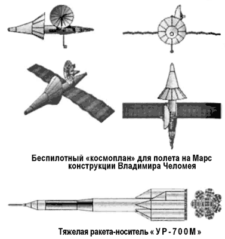
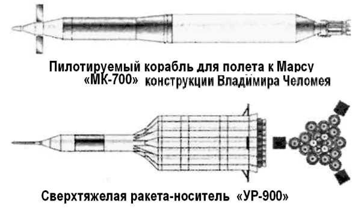

На Марс по Владимиру Челомею
Параллельно с «МЭК» обсуждался и вариант проекта «Аэлита» предложенный ОКБ-52 Владимира Челомея.
Впервые ОКБ-52 обратилось к марсианской теме в начале 60-х. В то время Челомей изучал возможность использования разработанных в его бюро крылатых ракет морского базирования в космических исследованиях. По его личной инициативе было разработано целое семейство беспилотных космопланов, которые могли быть использованы для изучения Марса.
Космопланы Челомея строились по модульному принципу.
Обычно они состояли из следующих модулей: разгонный блок на ЖРД, блок атомного реактора, связка маршевых ионных двигателей и собственно космоплан с возвращаемой частью.
Сам космоплан представлял собой аппарат конической формы, находящийся в теплозащитном контейнере, с лепестковыми щитками, обеспечивающими маневрирование в атмосфере. При входе в атмосферу Марса космоплан тормозился до приемлемой скорости, после чего теплозащитный контейнер сбрасывался, разворачивались крылья, включался турбореактивный двигатель и начинался полет аппарата над красной планетой.
Всего в рамках «Темы К» было разработано два варианта космопланов для полета к Марсу и Венере. В качестве средства для выведения комплекса, на околоземную орбиту была выбрана баллистическая ракета «УР-200К» грузоподъемностью 2 тонны.

Однако смещение Никиты Хрущева и создание Комиссии по расследованию деятельности ОКБ-52 поставило крест на честолюбивых планах Владимира Челомея. «Тема К» и работы над ракетой-носителем «УР-200К» были закрыты.
В конце 60-х выдающиеся успехи ракет «УР-500К» («Протон-К») воодушевили конструкторов ОКБ-52 (ЦКБМ) на альтернативный проект пилотируемой экспедиции к Марсу. Этот вариант опирался на «лунную» ракету «УР-700»
Согласно проекту старт к Марсу был бы возможен уже в 1974 году. Корабль выводился на низкую околоземную орбиту модифицированной ракетой «УР-700М». Экипаж из двух космонавтов в марсианском корабле «МК-700» провел бы два года в полете к Марсу и затем вернулся бы на Землю в капсуле, разработанной для челомеевского транспортного корабля снабжения («ТКС»).
Габариты корабля «МК-700»: полная длина — 140 метров, максимальный диаметр — 12,5 метра, полная масса — 140 тонн. В качестве маршевого двигателя для межпланетного корабля планировалось использовать ядерный ракетный двигатель «РД-0410», разрабатываемый в то время.
О высадке космонавтов на Марс конструкторы бюро Челомея пока не думали. Идея снабдить «МК-700» посадочным модулем типа «ЛК-700» возникла позже, когда в ОКБ-52 приступили к предэскизному проектированию «УР-900».
Эта гигантская сверхтяжелая ракета-носитель (полная длина — 90 метров, максимальный диаметр — 28 метров, стартовая масса — 8000 тонн) на двигателях «РД-254» конструкции Глушко могла вывести на опорную околоземную орбиту массу до 240 тонн.
Однако предложение Челомея разработать для проекта «Аэлита» огромную ракету-носитель было сразу отклонено из-за трудностей с финансированием.

Интересно, что при обсуждении технических вариантов межпланетной экспедиции на теоретических занятиях в Центре подготовки космонавтов нашлись оптимисты, утверждавшие, что даже ракетоноситель «УР-500К» («Протон-К») в связке с разгонным блоком «Д» и кораблем «Союз 7К-Л1» вполне обеспечит облет Марса при точном определении оптимальных параметров полета самим экипажем. Все упиралось в возможности системы обеспечения жизнедеятельности экипажа, ресурсов которой явно не хватало на длительный полет даже одного космонавта. Правда, в отряде космонавтов тут же объявился смельчак, готовый рискнуть жизнью ради прорыва советской пилотируемой космонавтики в межпланетное пространство.
Им оказался так и не слетавший в космос летчик-космонавт, ныне профессор и академик Академии космонавтики Михаил Бурдаев. Он вызвался в одиночку слетать к Марсу на уже испытанном тогда лунном орбитальном корабле «Союз 7К-Л1» («Зонд»). В случае аварийной ситуации или при недостаточности ресурсов системы обеспечения жизнедеятельности космонавт готов был застрелиться из пистолета, хранящегося в кармане защитного комбинезона. Понятно, что поддержки в Центре подготовки космонавтов такая смелая инициатива не получила…